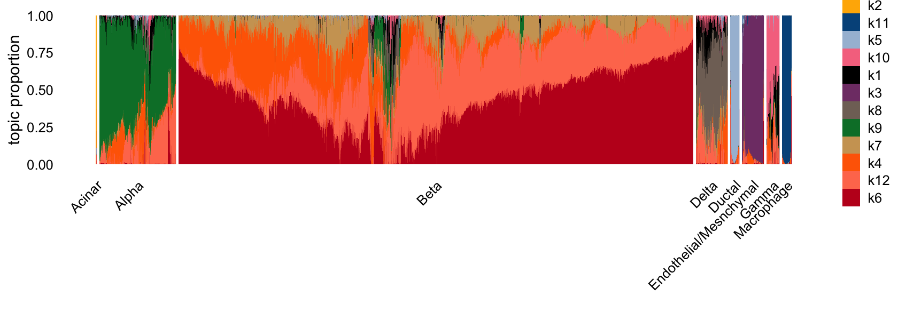

Last updated: 2025-12-13
Checks: 5 2
Knit directory:
single-cell-jamboree/analysis/
This reproducible R Markdown analysis was created with workflowr (version 1.7.2). The Checks tab describes the reproducibility checks that were applied when the results were created. The Past versions tab lists the development history.
The R Markdown file has unstaged changes. To know which version of
the R Markdown file created these results, you’ll want to first commit
it to the Git repo. If you’re still working on the analysis, you can
ignore this warning. When you’re finished, you can run
wflow_publish to commit the R Markdown file and build the
HTML.
Great job! The global environment was empty. Objects defined in the global environment can affect the analysis in your R Markdown file in unknown ways. For reproduciblity it’s best to always run the code in an empty environment.
The command set.seed(1) was run prior to running the
code in the R Markdown file. Setting a seed ensures that any results
that rely on randomness, e.g. subsampling or permutations, are
reproducible.
Great job! Recording the operating system, R version, and package versions is critical for reproducibility.
To ensure reproducibility of the results, delete the cache directory
pancreas_cytokine_lsa_clustering_cache and re-run the
analysis. To have workflowr automatically delete the cache directory
prior to building the file, set delete_cache = TRUE when
running wflow_build() or wflow_publish().
Great job! Using relative paths to the files within your workflowr project makes it easier to run your code on other machines.
Great! You are using Git for version control. Tracking code development and connecting the code version to the results is critical for reproducibility.
The results in this page were generated with repository version a21619c. See the Past versions tab to see a history of the changes made to the R Markdown and HTML files.
Note that you need to be careful to ensure that all relevant files for
the analysis have been committed to Git prior to generating the results
(you can use wflow_publish or
wflow_git_commit). workflowr only checks the R Markdown
file, but you know if there are other scripts or data files that it
depends on. Below is the status of the Git repository when the results
were generated:
Ignored files:
Ignored: analysis/.Rhistory
Untracked files:
Untracked: analysis/figure/
Untracked: analysis/pancreas_cytokine_lsa_clustering_cache/
Untracked: data/GSE156175_RAW/
Untracked: data/experiment_results.Rdata
Untracked: data/panc_cyto_lsa_tm_k12.rds
Untracked: data/pancreas_cytokine_lsa.Rdata
Untracked: output/panc_cyto_lsa_res/
Unstaged changes:
Modified: analysis/pancreas_cytokine_lsa_clustering.Rmd
Note that any generated files, e.g. HTML, png, CSS, etc., are not included in this status report because it is ok for generated content to have uncommitted changes.
These are the previous versions of the repository in which changes were
made to the R Markdown
(analysis/pancreas_cytokine_lsa_clustering.Rmd) and HTML
(docs/pancreas_cytokine_lsa_clustering.html) files. If
you’ve configured a remote Git repository (see
?wflow_git_remote), click on the hyperlinks in the table
below to view the files as they were in that past version.
| File | Version | Author | Date | Message |
|---|---|---|---|---|
| html | cb5c359 | Peter Carbonetto | 2025-07-11 | Ran wflow_publish("pancreas_cytokine_lsa_clustering.Rmd"). |
| Rmd | 17a796d | Peter Carbonetto | 2025-07-11 | wflow_publish("pancreas_cytokine_lsa_clustering.Rmd", verbose = T, |
| Rmd | 6f9bee5 | Peter Carbonetto | 2025-07-11 | Added back the Seurat analysis to pancreas_cytokine_lsa_clustering.Rmd. |
| Rmd | 9325970 | Peter Carbonetto | 2025-07-09 | A few edits to pancreas_cytokine_lsa_clustering.Rmd. |
| Rmd | 746b8f3 | Peter Carbonetto | 2025-07-09 | A few small revisions to the pancreas_cytokine_lsa_clustering analysis. |
| Rmd | 5ec605f | Peter Carbonetto | 2025-07-09 | A few more edits to the pancreas_cytokine_lsa_clustering analysis. |
| Rmd | ac2f5f9 | Peter Carbonetto | 2025-07-09 | A few revisions/fixes to the pancreas_cytokine_lsa_clustering analysis. |
| Rmd | 7af0ecd | Eric Weine | 2025-06-17 | added umap plot to clustering |
| html | 7af0ecd | Eric Weine | 2025-06-17 | added umap plot to clustering |
| Rmd | a7e6cd5 | Eric Weine | 2025-06-16 | added initial clustering of LSA pancreas cytokine paper |
| html | a7e6cd5 | Eric Weine | 2025-06-16 | added initial clustering of LSA pancreas cytokine paper |
Here we will prepare the single-cell RNA-seq data from Stancill
et al 2021 for analysis with the topic model and other matrix
factorization methods. The data files were obtained by downloading and
the GSE156175_RAW.tar file from GEO
accession GSE156175. To run this script, download this file from GEO
and extract the contents into a folder called “GSE156175_RAW” in the
data directory.
Load the R packages used to perform the data processing and initial analyses:
library(Matrix)
library(tools)
library(readr)
library(cowplot)
library(fastTopics)
library(dplyr)
library(Seurat)Set the seed for reproducibility:
set.seed(1)Import the sample information:
barcodes1<-read_tsv("../data/GSE156175_RAW/GSM5842388_Rep1_S1_barcodes.tsv.gz",
col_names = "barcode")
barcodes2 <- read_tsv("../data/GSE156175_RAW/GSM4726017_S2_barcodes.tsv.gz",
col_names = "barcode")
barcodes3 <- read_tsv("../data/GSE156175_RAW/GSM4726018_S3_barcodes.tsv.gz",
col_names = "barcode")
barcodes4 <- read_tsv("../data/GSE156175_RAW/GSM4726019_S4_barcodes.tsv.gz",
col_names = "barcode")
barcodes1$barcode <- substr(barcodes1$barcode,1,nchar(barcodes1$barcode) - 2)
barcodes2$barcode <- substr(barcodes2$barcode,1,nchar(barcodes2$barcode) - 2)
barcodes3$barcode <- substr(barcodes3$barcode,1,nchar(barcodes3$barcode) - 2)
barcodes4$barcode <- substr(barcodes4$barcode,1,nchar(barcodes4$barcode) - 2)
barcodes1$condition <- "Untreated"
barcodes2$condition <- "IL-1B"
barcodes3$condition <- "IFNg"
barcodes4$condition <- "IL-1B_IFNg"
barcodes <- rbind(barcodes1, barcodes2, barcodes3, barcodes4)
barcodes$cell_bc <- paste0(barcodes$barcode, "_", barcodes$condition)
barcodes$condition <- factor(barcodes$condition)Import the gene information:
genes1 <- read_tsv("../data/GSE156175_RAW/GSM5842388_Rep1_S1_features.tsv.gz",
col_names = c("ensembl", "symbol", "type"))
genes2 <- read_tsv("../data/GSE156175_RAW/GSM4726017_S2_features.tsv.gz",
col_names = c("ensembl", "symbol", "type"))
genes3 <- read_tsv("../data/GSE156175_RAW/GSM4726018_S3_features.tsv.gz",
col_names = c("ensembl", "symbol", "type"))
genes4 <- read_tsv("../data/GSE156175_RAW/GSM4726019_S4_features.tsv.gz",
col_names = c("ensembl", "symbol", "type"))
genes <- genes1
genes$type <- factor(genes$type)Now import in the read counts:
counts1 <- t(readMM("../data/GSE156175_RAW/GSM5842388_Rep1_S1_matrix.mtx.gz"))
counts2 <- t(readMM("../data/GSE156175_RAW/GSM4726017_S2_matrix.mtx.gz"))
counts3 <- t(readMM("../data/GSE156175_RAW/GSM4726018_S3_matrix.mtx.gz"))
counts4 <- t(readMM("../data/GSE156175_RAW/GSM4726019_S4_matrix.mtx.gz"))
rownames(counts1) <- paste0(barcodes1$barcode, "_", barcodes1$condition)
rownames(counts2) <- paste0(barcodes2$barcode, "_", barcodes2$condition)
rownames(counts3) <- paste0(barcodes3$barcode, "_", barcodes3$condition)
rownames(counts4) <- paste0(barcodes4$barcode, "_", barcodes4$condition)
colnames(counts1) <- genes1$symbol
colnames(counts2) <- genes2$symbol
colnames(counts3) <- genes3$symbol
colnames(counts4) <- genes4$symbol
counts <- rbind(
as.matrix(counts1),
as.matrix(counts2),
as.matrix(counts3),
as.matrix(counts4)
)
counts <- as(counts, "CsparseMatrix")Remove genes that are not expressed in any cell:
x <- colSums(counts)
j <- which(x > 0)
genes <- genes[j,]
counts <- counts[,j]Remove cells in terms (i) total UMI count and (ii) very few expressed genes:
x <- rowSums(counts > 0)
i <- which(x > 2000)
barcodes <- barcodes[i,]
counts <- counts[i,]
x <- rowSums(counts)
i <- which(x <= 60000)
barcodes <- barcodes[i,]
counts <- counts[i,]PC: The filtering step x > 2000 seems a bit
aggressive. I think we could have retained some more cells.
Remove cells with high mitochondrial counts:
mito_genes <- which(substr(genes$symbol,1,2) == "mt")
s <- rowSums(counts)
s_mito <- rowSums(counts[,mito_genes])
prop_mito <- s_mito/s
i <- which(prop_mito < 0.1)
barcodes <- barcodes[i,]
counts <- counts[i,]PC: Again, the filtering step prop_mito < 0.1 seems a
bit aggressive.
Remove MALAT1, ribosomal genes, and mitochondrial genes:
j <- which(!(grepl("^mt-",genes$symbol) | grepl("^Rp[sl]",genes$symbol)))
genes <- genes[j,]
counts <- counts[,j]
j <- which(genes$symbol != "Malat1")
genes <- genes[j,]
counts <- counts[,j]Remove other genes that are expressed in only 1 or 2 cells:
x <- colSums(counts > 0)
j <- which(x > 2)
genes <- genes[j,]
counts <- counts[,j]Fit a topic model with \(K = 12\).
set.seed(1)
tm_fit <- fit_poisson_nmf(X = counts,k = 12,control = list(nc = 7),
verbose = "none")
Warning: The above code chunk cached its results, but
it won’t be re-run if previous chunks it depends on are updated. If you
need to use caching, it is highly recommended to also set
knitr::opts_chunk$set(autodep = TRUE) at the top of the
file (in a chunk that is not cached). Alternatively, you can customize
the option dependson for each individual chunk that is
cached. Using either autodep or dependson will
remove this warning. See the
knitr cache options for more details.
Here is the Structure plot:
set.seed(1)
structure_plot(tm_fit,n = Inf)
# Running tsne on 7606 x 12 matrix.
# Warning: `aes_string()` was deprecated in ggplot2 3.0.0.
# ℹ Please use tidy evaluation idioms with `aes()`.
# ℹ See also `vignette("ggplot2-in-packages")` for more information.
# ℹ The deprecated feature was likely used in the fastTopics package.
# Please report the issue at
# <https://github.com/stephenslab/fastTopics/issues>.
# This warning is displayed once every 8 hours.
# Call `lifecycle::last_lifecycle_warnings()` to see where this warning was
# generated.
| Version | Author | Date |
|---|---|---|
| cb5c359 | Peter Carbonetto | 2025-07-11 |
Below is a heatmap annotation of the marker genes given in the Stancill paper:
scale_rows <- function (A)
A / apply(A,1,max)
marker_genes <- c("Ins1","Ins2","Gcg","Sst","Ppy","Krt17","Ccr5",
"Col1a1","Cd34","Cpa1")
F <- poisson2multinom(tm_fit)$F
F <- F[marker_genes,]
F <- scale_rows(F)
rownames(F) <- marker_genes
annotation_heatmap(F,select_features = "all",verbose = FALSE)
| Version | Author | Date |
|---|---|---|
| cb5c359 | Peter Carbonetto | 2025-07-11 |
Below are some comments relating my guesses about factor associations. Many of the beta associated factors are non-specific:
Now, I do celltype assignments. I assigned cells to the celltype corresponding to the factor it is most loaded on. Below is the structure plot with cells grouped by type.
L <- poisson2multinom(tm_fit)$L
L_df <- as.data.frame(L)
L_df <- L_df %>%
dplyr::select(
k2, k3, k5, k6, k7, k8, k9, k10, k11
)
cluster_map <- c(
k7 = "Beta",
k6 = "Beta",
k2 = "Acinar",
k3 = "Endothelial/Mesenchymal",
k5 = "Ductal",
k8 = "Delta",
k9 = "Alpha",
k10 = "Gamma",
k11 = "Macrophage"
)
L_df <- L_df %>%
rowwise() %>%
mutate(
# 1. Identify which column is maximal in this row
max_col = names(cluster_map)[which.max(c_across(all_of(names(cluster_map))))],
# 2. Map that column name to the cluster label
cluster = cluster_map[[max_col]]
) %>%
ungroup()
structure_plot(tm_fit, grouping = L_df$cluster, gap = 30, n = Inf)
# Running tsne on 989 x 12 matrix.
# Running tsne on 5475 x 12 matrix.
# Running tsne on 493 x 12 matrix.
# Running tsne on 111 x 12 matrix.
# Running tsne on 246 x 12 matrix.
# Running tsne on 176 x 12 matrix.
# Running tsne on 105 x 12 matrix.
| Version | Author | Date |
|---|---|---|
| cb5c359 | Peter Carbonetto | 2025-07-11 |
Overall, this clustering looks quite good.
Save the processed data to an RData file:
save(list = c("barcodes","genes","counts"),
file = "pancreas_cytokine_lsa.RData")
# resaveRdaFiles("pancreas_cytokine.RData")
sessionInfo()
# R version 4.5.2 (2025-10-31)
# Platform: aarch64-apple-darwin20
# Running under: macOS Ventura 13.5
#
# Matrix products: default
# BLAS: /System/Library/Frameworks/Accelerate.framework/Versions/A/Frameworks/vecLib.framework/Versions/A/libBLAS.dylib
# LAPACK: /Library/Frameworks/R.framework/Versions/4.5-arm64/Resources/lib/libRlapack.dylib; LAPACK version 3.12.1
#
# locale:
# [1] en_US.UTF-8/en_US.UTF-8/en_US.UTF-8/C/en_US.UTF-8/en_US.UTF-8
#
# time zone: America/New_York
# tzcode source: internal
#
# attached base packages:
# [1] tools stats graphics grDevices utils datasets methods
# [8] base
#
# other attached packages:
# [1] Seurat_5.2.1 SeuratObject_5.3.0 sp_2.2-0 dplyr_1.1.4
# [5] fastTopics_0.7-30 cowplot_1.2.0 readr_2.1.6 Matrix_1.7-4
#
# loaded via a namespace (and not attached):
# [1] RColorBrewer_1.1-3 rstudioapi_0.17.1 jsonlite_2.0.0
# [4] magrittr_2.0.4 spatstat.utils_3.2-0 farver_2.1.2
# [7] rmarkdown_2.30 fs_1.6.6 vctrs_0.6.5
# [10] ROCR_1.0-11 spatstat.explore_3.6-0 SQUAREM_2021.1
# [13] mixsqp_0.3-54 htmltools_0.5.9 progress_1.2.3
# [16] truncnorm_1.0-9 sass_0.4.10 sctransform_0.4.2
# [19] parallelly_1.46.0 KernSmooth_2.23-26 bslib_0.9.0
# [22] htmlwidgets_1.6.4 ica_1.0-3 plyr_1.8.9
# [25] plotly_4.11.0 zoo_1.8-14 cachem_1.1.0
# [28] whisker_0.4.1 igraph_2.2.1 mime_0.13
# [31] lifecycle_1.0.4 pkgconfig_2.0.3 R6_2.6.1
# [34] fastmap_1.2.0 fitdistrplus_1.2-4 future_1.68.0
# [37] shiny_1.12.1 digest_0.6.39 patchwork_1.3.2
# [40] tensor_1.5.1 rprojroot_2.1.1 RSpectra_0.16-2
# [43] irlba_2.3.5.1 labeling_0.4.3 invgamma_1.2
# [46] progressr_0.18.0 spatstat.sparse_3.1-0 polyclip_1.10-7
# [49] abind_1.4-8 httr_1.4.7 compiler_4.5.2
# [52] withr_3.0.2 bit64_4.6.0-1 S7_0.2.1
# [55] fastDummies_1.7.5 MASS_7.3-65 gtools_3.9.5
# [58] lmtest_0.9-40 otel_0.2.0 httpuv_1.6.16
# [61] future.apply_1.20.1 goftest_1.2-3 glue_1.8.0
# [64] quadprog_1.5-8 nlme_3.1-168 promises_1.5.0
# [67] grid_4.5.2 Rtsne_0.17 cluster_2.1.8.1
# [70] reshape2_1.4.5 generics_0.1.4 spatstat.data_3.1-9
# [73] gtable_0.3.6 tzdb_0.5.0 tidyr_1.3.1
# [76] data.table_1.17.8 hms_1.1.4 spatstat.geom_3.6-1
# [79] RcppAnnoy_0.0.22 ggrepel_0.9.6 RANN_2.6.2
# [82] pillar_1.11.1 stringr_1.6.0 vroom_1.6.7
# [85] spam_2.11-1 RcppHNSW_0.6.0 later_1.4.4
# [88] splines_4.5.2 lattice_0.22-7 bit_4.6.0
# [91] deldir_2.0-4 survival_3.8-3 tidyselect_1.2.1
# [94] miniUI_0.1.2 pbapply_1.7-4 knitr_1.50
# [97] git2r_0.36.2 gridExtra_2.3 scattermore_1.2
# [100] RhpcBLASctl_0.23-42 xfun_0.54 matrixStats_1.5.0
# [103] stringi_1.8.7 workflowr_1.7.2 lazyeval_0.2.2
# [106] yaml_2.3.12 evaluate_1.0.5 codetools_0.2-20
# [109] tibble_3.3.0 cli_3.6.5 uwot_0.2.4
# [112] RcppParallel_5.1.11-1 xtable_1.8-4 reticulate_1.44.1
# [115] jquerylib_0.1.4 Rcpp_1.1.0 spatstat.random_3.4-3
# [118] globals_0.18.0 png_0.1-8 spatstat.univar_3.1-5
# [121] parallel_4.5.2 ggplot2_4.0.1 prettyunits_1.2.0
# [124] dotCall64_1.2 listenv_0.10.0 viridisLite_0.4.2
# [127] scales_1.4.0 ggridges_0.5.7 purrr_1.2.0
# [130] crayon_1.5.3 rlang_1.1.6 ashr_2.2-63